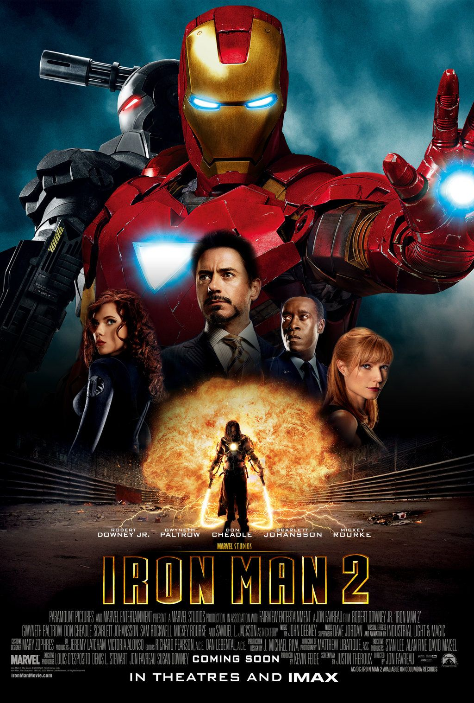

«Залізна людина 2» (англ. Iron Man 2) — продовження фільму «Залізна людина» 2008 року, базованого на коміксах студії Marvel. Прем'єра фільму відбулась 26 квітня 2010 в Лос-Анджелесі, Каліфорнія і 28 квітня 2010 в Франції. У США фільм вийшов 7 травня, в Україні — 29 квітня. Фільм Залізна Людина 2 у прокаті зібрав в цілому $2,2 мільйона з 960 копій.
Світ дізнався, що мільйонер-винахідник Тоні Старк і є Залізна Людина. Після цього уряд США намагається дізнатися у нього секрет його костюму, обґрунтовуючи це тим, що «залізна людина» — зброя. У цей час багато країн намагаються створити костюм аналогічний «Залізній людині», але всі спроби закінчувалися провалом. На думку Старка, безпосередньої загрози тут немає і більшості країн доведеться ще років п'ять-десять працювати над цим. Тим часом російський інженер Іван Ванко, син Антона Ванко, який працював разом з Говардом Старком, замислив помсту за вислання його батька, що співпрацював зі старковим батьком, із США. Для цього він збирає портативний атомний реактор за кресленнями свого покійного батька, який підключає до металевих батогів. Тоні бентежить серйозна проблема, про яку знають лише він і його дворецький Джарвіс — паладій, що є паливом для реактора, який рятує йому життя, одночасно і отруює його. Разом з Джарвісом він намагався знайти елемент, здатний надійно та безпечно замінити паладій. Він розуміє, що скоро помре і починає робити божевільні вчинки: призначає Пеппер Потс замість себе на посаду генерального директора «Старк-Експо», кидає обов'язки Залізної людини. Врешті Старк вирішує взяти участь у перегонах «Формули-1». На перегони потайки прибуває Іван Ванко та береться своїми електричними батогами нищити автомобілі. Завдяки запасному костюму в чемодані Старку вдається перемогти його, в результаті Івана забирають до в'язниці. Та згодом його викрадають і привозять Гаммеру, головному конкурентові Старка. Гаммер пропонує угоду: він не здасть Ванко органам правопорядку, якщо той допоможе з розробкою аналогів костюма Старка. Але той вирішує зробити замість костюмів повноцінних роботів. Коли Тоні напивається на своєму дні народження і влаштовує погром, підполковнику Роудсу доводиться вгамовувати його бійкою, забравши запасний костюм. Все більше військових тепер бачать захисником країни і миру в світі саме Роудса, а не безвідповідального Тоні. На це звертає увагу і Нік Ф'юрі з Наташею Романовою, його колеги з організації Щ. И. Т. Нік радить брати приклад з батька Тоні — Говарда Старка. Тоні переглядає старі кінострічки, де його батько говорить про макет виставки «Старк-Експо». На одному із записів виявляється звернення Говарда до Тоні, де він показує на макет «Старк-Експо» і говорить про виняткову важливість свого проекту, який він присвячує синові. Тоні знаходить макет і, змоделювавши його об'ємну модель, розуміє, що там зашифровано схему атома нового елемента, здатного стати нешкідливою заміною паладію. Збудувавши прискорювач часток, він синтезує шуканий елемент. Згодом Гаммер виступає на конференції «Старк-Експо», на якій показує роботів (яких він назвав «Гаммердрони») і костюм, усередині якого знаходиться Джеймс Роудс, видаючи їх за власний винахід. У цей час Ванко дзвонить Старку, викликаючи того на бій. Старк погоджується, дивуючись, що Ванко живий. Коли Старк влітає в зал, бажаючи попередити Роудса про небезпеку, роботи й костюм за сигналом Ванко спрямовуються в погоню за Старком. Агенти компанії відправляються до нього, але той встигає втекти звідти у вдосконаленому костюмі з електричними батогами. Агенту Наташі Романовій вдається перезавантажити костюм Роудса, і вдвох зі Старком він протистоїть роботам. Після цього прилітає Ванко, та зброя обох костюмів марна проти нього. Старк здогадується об'єднати реактивні промені на Ванко, чим знищити його. Тут виявляється, що всі роботи запрограмовані на самознищення. Залізна людина рятує Пеппер від вибуху. Нік Ф'юрі вдруге приходить до Старка, тепер він пропонує приєднатися до команди Месників лише як консультанту. Наприкінці Тоні і Роудс вручають медалі «за винятковий внесок у забезпечення безпеки».
У цей час фільм має сумарний рейтинг 76 % на сайті Rotten Tomatoes, базуючись на оцінках, виставлених у 54 відгуках, що дає середній рейтинг 6.4/10. Веб-сайт Metacritic оцінив фільм у 61 бал з можливих 100, виходячи з нормалізованого рейтинга 6 оглядів.
«Людина-павук: Повернення додому» (2017)
«Месники: Війна нескінченності» (2018)
«Людина-павук: Далеко від дому» (2019)